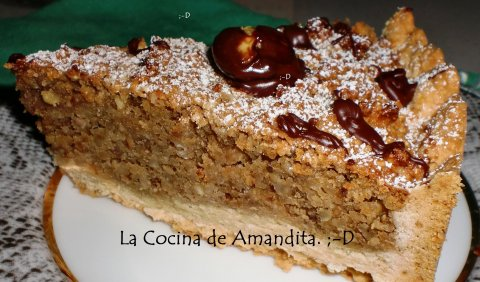
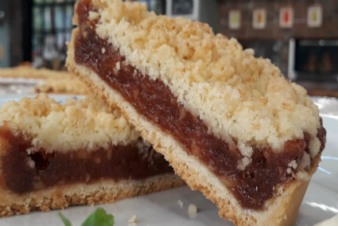

Recetas de tarta
Home
Privacy policy
Terms and Conditions
Photo gallery
Contacts
Privacy policy
Posted by
Someone
2021.06.19 17:35 •
Comments (64)
•
Full article
<div class="mc_vtvc_th b_canvas"><div class="cico" style="width:234px;height:131px;"><div class="rms_iac" style="height:131px;line-height:131px;width:234px;" data-height="131" data-width="234" data-alt="LA MEJOR TARTA DE MANZANAS/PASTEL DE MANZANAS FACIL/LA REINA de lasTARTAS de otoño/Receta de otoño" data-role="presentation" data-class="rms_img" data-src="https://tse4.mm.bing.net/th?id=OVP.QG3Ap5TmCu_-T_dwP2rxEgEsDh" frameborder="0" allow="accelerometer; autoplay; encrypted-media; gyroscope; picture-in-picture" allowfullscreen>

Blog
About
Categories
9 tartas fáciles. Tartas fáciles sin horno - PequeRecetas
33 Recetas de Tartas - Recetas de Escándalo
343 RECETAS Tartas y pasteles - Nestlé Cocina
15 recetas de tartas que siempre quisiste hacer en su versión .
Recetas de tartas (456 recetas) - Lecturas
Nuestra selección de hoy es de 9 fáciles sin horno que . Tarta de galletas con flan, tarta Oreo .
Siete recetas de tartas fáciles para llevar a las casas de .
TARTAS SIN HORNO FÁCILES | Cocina Casera y Fácil
Recetas de Tartas - 576 recetas
Receta de masa dulce para tartas - Recetas de Laylita
Recetas de tarta sencillas y deliciosas - De Rechupete
Photo #1

Menu
9 tartas fáciles. Tartas fáciles sin horno - PequeRecetas
33 Recetas de Tartas - Recetas de Escándalo
343 RECETAS Tartas y pasteles - Nestlé Cocina
15 recetas de tartas que siempre quisiste hacer en su versión .
Recetas de tartas (456 recetas) - Lecturas
Siete recetas de tartas fáciles para llevar a las casas de .
TARTAS SIN HORNO FÁCILES | Cocina Casera y Fácil
Recetas de Tartas - 576 recetas
Receta de masa dulce para tartas - Recetas de Laylita
Recetas de tarta sencillas y deliciosas - De Rechupete